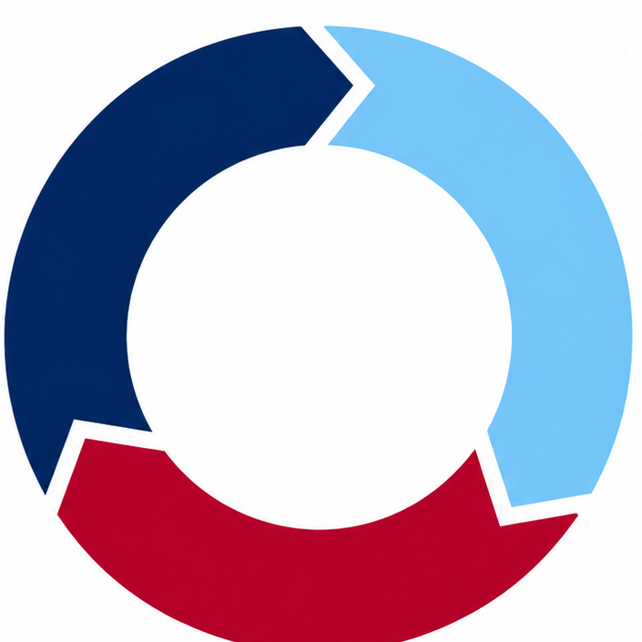

Focused planning workspace for Cycle 3 lessons, units and scope maps.
Choose the planning shape, add the practical setup, then lock the curriculum behaviour. Nothing else lives here.
Select one planning shape. The rest of the workflow follows this choice.
A detailed single lesson plan with flow, evidence, support, extension and light resources.
The practical brief the planner needs before anything is created.
Same Cycle 3 spine as CycleStudio and CycleAssess. No invented LO nonsense.
Optional PDF, PPTX or image references for the AI to use when creating the plan.
Files are used as prompt context for AI generation. PPTX slide text is extracted in the browser. Files are not saved permanently in local storage.
Pick how this plan begins. After any creation action, you move to Edit & Review.
Work from scratch, a scaffold, a saved template, or let AI draft the bones.
This can take a little while for units and scope maps.
Edit individual parts. Sections now collapse so the editor does not turn into a scroll swamp. Preview updates live; export uses the preview.
Whole-plan actions live here. Section-specific tools now sit inside the relevant editor sections.
Saved plans and templates. Local storage only.
Recent saved/generated plans.
Reusable plan structures.
Stored locally on this device.
The default context is sent with AI planning requests so you do not keep retyping the same setup.
Your preferred cycle is remembered. Year level is still chosen each time you use Planner.
Build: refactor/optimise checkpoint. Keep doing this before adding large features.
When the app gains a major feature, pause before the next one and clean the structure. Tiny refactors now; no spaghetti archaeology later.
Pick a saved template for this planning type.
Planner will remember this, and you can change it later in Settings.
Cycle 1 and Cycle 2 curriculum outcomes will be added from official sources next. Until then, the Planner shell keeps using the existing Cycle 3 curriculum bank.